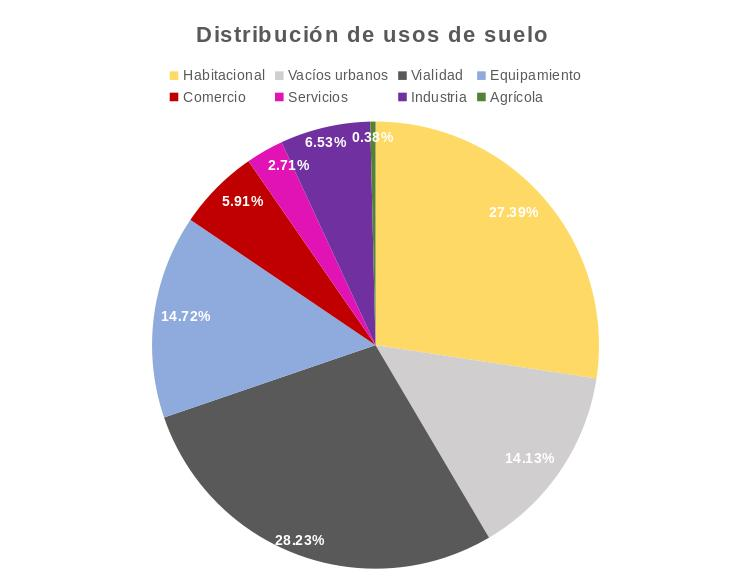

ANTECEDENTES
El área urbana de Torreón actualmente tiene una superficie de 15,288.8 hectáreas, es decir que el 49% del polígono municipal en el que se encuentra la ciudad de Torreón está urbanizado. Fue a partir de la década de 1980-1990 en que la expansión de la mancha urbana presentó un crecimiento acelerado. Mientras que la población en los últimos 30 años aumentó 57%, la mancha urbana logró duplicarse en el mismo periodo. De acuerdo con el Índice de Ciudades Prósperas de ONU Habitat, esto es un indicador de crecimiento disperso y conlleva a una estructura urbana fragmentada, de baja densidad, con grandes porcentajes de vacíos urbanos y altos costos sociales relacionados con la movilidad urbana.
Los usos de suelo nos ayudan a entender el dinamismo de la ocupación del territorio y es aquí donde logramos observar la relación entre el crecimiento urbano y las necesidades que demanda la población por medio de sus actividades básicas como son habitar, trabajar/estudiar, realizar compras, etc. Es decir, que a partir de analizar la utilización del territorio y su distribución es que logramos entender la estructura y organización de la ciudad.
PONDERACIÓN DE USOS DE SUELO ACTUALES

Al realizar el análisis de uso de suelo actual de Torreón se observa que del área urbana el 27.39% se destina a uso habitacional, lo que equivale a 4,187.36 hectáreas. El equipamiento, que juega un papel importante proporcionando a la población servicios culturales, educativos, de salud, recreativos y económicos ocupa 2,249.94 hectáreas las cuales corresponden al 14.72%. En cuanto a las actividades económicas, 904.19 hectáreas tienen un uso de suelo comercial, es decir el 5.91% y 414.79 hectáreas son destinadas a servicios, representando el 2.71% del área urbana. El uso industrial equivale a 998.33 hectáreas, correspondiendo al 6.53% y el uso agrícola tiene una presencia en el área urbana de 57.34 hectáreas siendo éste el de menor ponderación con un 0.38% del área total. Existen 2,160.12 hectáreas de vacíos urbanos, es decir, que el 14.13% son espacios sin un uso y el 28.23% es destinado a vialidades.
DISTRIBUCIÓN ESPACIAL DE LOS DISTINTOS USOS DE SUELO
Para obtener una idea más detallada de la estructura urbana de la ciudad de Torreón, es necesario observar la organización del territorio. Es en la distribución espacial en la que se puede observar un fuerte desequilibrio en la utilización del suelo. Por ejemplo, realizando un análisis del suelo que se desarrolló a partir de 1990 y comparándolo con los usos actuales del área desarrollada anterior a esta fecha, podemos observar que es un suelo fragmentado con grandes áreas de espacios vacíos, es aquí en donde encontramos el 78.9% de los vacíos urbanos.
En cuanto a la relación entre zonas habitaciones y áreas de comercio y servicios, a pesar de significar el 51% del total del área urbana, alberga únicamente el 30.3% del suelo destinado a comercio y de igual manera el 29.9% del suelo de servicios. Lo que nos indica que el 70% del suelo comercial y de servicios se encuentra en el área desarrollada antes de 1990. Como punto importante se encuentra el uso de suelo de equipamiento, este se distribuye equitativamente entre ambas áreas, sin embargo, al realizar los análisis de áreas de servicio del equipamiento público, son, de igual manera, las zonas periféricas las que carecen de este tipo de equipamiento. Por otra parte, es en esta área en donde se ha destinado la mayor parte del suelo industrial agrupando en total el 60.5% de este uso.
El habitar en una ciudad dispersa y desequilibrada espacialmente influye directamente en el día a día de sus habitantes. Al limitar el acceso a servicios básicos la población se ve forzada a recorrer grandes distancias, desfavoreciendo principalmente a los grupos vulnerables. Actualmente el IMPLAN, está trabajando en la actualización del Plan Director de Desarrollo Urbano de Torreón, es a partir de este instrumento en que se buscará dar solución a las problemáticas de la ciudad. Uno de los ejes sobre los que trabajará el plan es Ciudad Incluyente, Segura, Resiliente y Sostenible, que tiene como objetivo garantizar el desarrollo de una ciudad inclusiva en la que exista un acceso equitativo al territorio para toda la población.
FUENTES:
Análisis elaborado en IMPLAN Torreón a partir de información de Catastro, 2019 y DENUE, 2019.
Índice de Ciudades Prósperas (ONU Hábitat, 2018).
Crecimiento Histórico de Torreón a 2010 (ONU Hábitat, 2018).